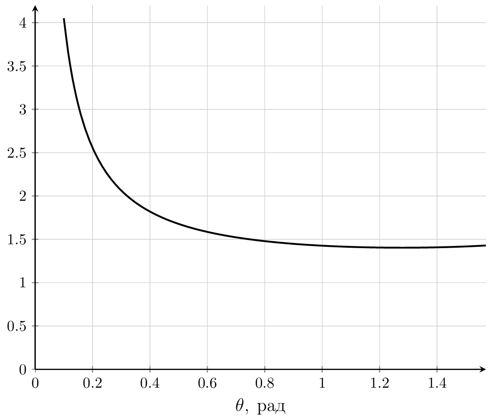
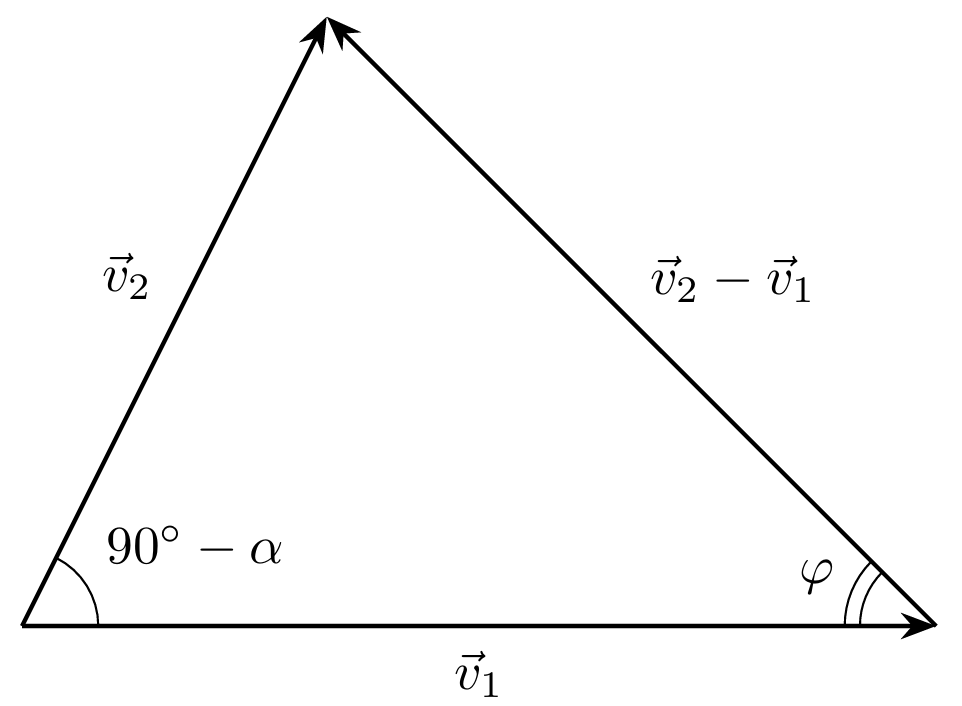

Y26 (2026) — English translation
Consider the displacement of the knife by $\mathrm dr$ in the cutting direction. The cut does not stretch, so its relative displacement along the wedge is also equal to $\mathrm dr$. Let's write down the law of conservation of energy for the sawed-off knife system: \[F_C\mathrm dr=Rw\mathrm dr+\mu N\mathrm dr\]From here we get:
Let's write down Newton's second law for a wedge in projection onto the horizontal axis: \[F_C=\mu N\cos\theta+N\sin\theta\]Combining this expression with the result of the previous paragraph, we get:
Let's build a graph:
This dependence has an extremum: \[\cos\theta-\mu\sin\theta=0,\quad \theta=\operatorname{arctg}\dfrac{1}{\mu}\approx73^{\circ}\]The minimum value of the force $F_C$ is expressed as: \[F_C=\dfrac{Rw}{1-\dfrac{\mu}{\sqrt{\mu^2+1}}}\approx 1.40Rw\]

Simplifying the answer from A2, we get:
In the absence of friction, the total force acting on the wedge is directed at an angle $\theta$ to the vertical, therefore:
There is no need to apply force to move parallel to the cutting line, therefore:
Let us introduce the projections $F_{\parallel}$ and $F_{\perp}$. According to the Coulomb-Amonton law, the friction force acting on the chips is equal to $\mu N$ in absolute value and is directed against the speed of movement of the chips relative to the wedge. Let's write down Newton's second law: \[F_{\perp}=N(\sin\theta+\mu\cos\theta\cos\psi)\]In the projection onto the perpendicular horizontal axis, the equilibrium condition is as follows: \[F_{\parallel}=\mu N\sin\psi\]Let's write down the ESE, for this we equate the power of the force $F$ to the power of energy loss in the system due to friction: \[\mu N v+Rwv\cos\psi=F_{\perp} v\cos\psi+F_{\parallel} v\sin\psi\]Express $N$, combining the results: \[N=\dfrac{Rw}{(\sin\theta+\mu\cos\theta\cos\psi)-\mu\cos\psi}\]Express $F$ like $F=\sqrt{F_{\parallel}^2+F_{\perp}^2}$:
The chip length remains constant, hence: \[\dfrac{t}{\sin\varphi}=\dfrac{t_c}{\cos(\varphi-\alpha)}\]Let us express $t_c$:
Let's equate the sines of the angles: \[\sin\varphi=\cos(\varphi-\alpha)=\sin(\pi/2-\varphi+\alpha)\]From here:
First solution
Consider the velocity triangle:
From here, according to the theorem of sines: \[\dfrac{|\vec v_2-\vec v_1|}{|\vec v_1|}=\dfrac{\cos\alpha}{\cos(\varphi-\alpha)}\]Let us express the answer:
Second solution
From the metal incompressibility equation: \[v_1 t=v_2 t_c\] Let us express the answer: \[\gamma=\dfrac{\sqrt{1+\left(\dfrac{\sin\varphi}{\cos(\varphi-\alpha)}\right)^2-2\dfrac{\sin\varphi}{\cos(\varphi-\alpha)}\sin\alpha}}{\sin\varphi}=\dfrac{\sqrt{\cos^2\varphi\cos^2\alpha+\sin^2\varphi\sin^2\alpha+2\sin\varphi\sin\alpha\cos\varphi\cos\alpha+\sin^2\varphi-2\sin\varphi\sin\alpha\cos\varphi\cos\alpha-2\sin^2\varphi\sin^2\alpha}}{\sin\varphi\cos(\varphi-\alpha)}\]By simple transformations, the answer is simplified to: \[\gamma=\dfrac{\cos\alpha}{\cos(\varphi-\alpha)\sin\varphi}\]

Let us associate the friction force acting on the cut with $F_C$, for this we write down the equality of the horizontal forces acting on the wedge: \[F_C=N(\mu\sin\alpha+\cos\alpha)\]We express the friction sieve $F_t$: \[F_t=\mu N=\dfrac{\mu F_C}{\mu\sin\alpha+\cos\alpha}=\dfrac{F_C\sin\beta}{\cos(\beta-\alpha)}\]We write the law of conservation of energy: \[F_C\mathrm dr=Rw\mathrm dr+F_t\mathrm dr\dfrac{|v_2|}{|v_1|}+k\gamma wt\mathrm dr\]From the theorem of sines: \[\dfrac{v_2}{v_1}=\dfrac{\sin\varphi}{\cos(\varphi-\alpha)}\]Combining the results, we obtain:
Let's substitute the value $\gamma$ and neglect $R$:
Let's find the maximum denominator. To do this, we equate the derivative of the denominator to zero: \[\cos\varphi\cos(\varphi-\alpha)-\sin\varphi\sin(\varphi-\alpha)-\dfrac{2\sin\beta\sin\varphi\cos\varphi}{\cos(\beta-\alpha)}=0\]From here: \[\cos(2\varphi-\alpha)\cos(\beta-\alpha)=\sin 2\varphi\sin\beta\]We transform the resulting expressions using the formulas for half-sum and half-difference of cosines: \[\dfrac{\cos(2\varphi+\beta-2\alpha)+\cos(2\varphi-\beta)}{2}=\dfrac{\cos(2\varphi-\beta)-\cos(2\varphi+\beta)}{2}\]From here we get the equation: \[\pi-2\varphi-\beta=2\varphi+\beta-2\alpha\]Optimal angle:
Let's substitute the value $\varphi$ and determine the minimum possible force:
Let's write down the law of conservation of energy: \[F\mathrm da=Rw\mathrm da-\mathrm d\Lambda\]From here:
Spontaneous spread of the cut is possible at $F\le 0$. Then: \[Rw\mathrm -\mathrm d\Lambda/\mathrm da\le 0\]Surface energy density of the material: \[\mathrm d\Lambda/\mathrm dS=\dfrac{1}{2}E\varepsilon^2w\]Let us express the area of the free triangular region: \[S=ta\]From here: \[\mathrm d\Lambda/\mathrm da=\dfrac{1}{2}E\varepsilon^2wt\]Then: